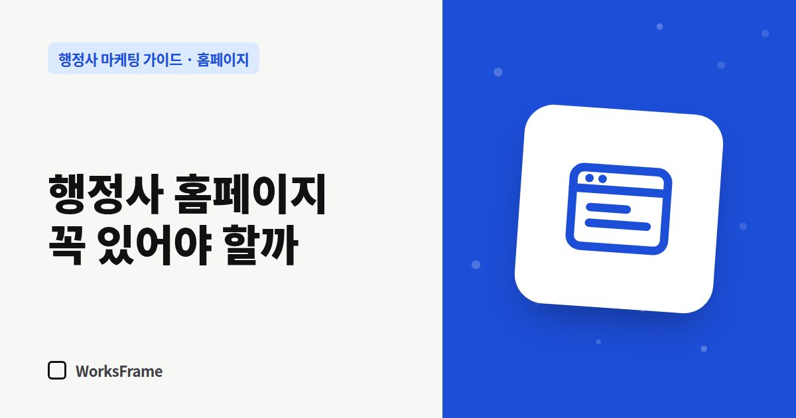

홈페이지
행정사 홈페이지, 블로그와 네이버 플레이스만으로 충분할까?
한 줄 답
네이버 플레이스는 ‘여기 있다’, 블로그는 ‘소식’, 홈페이지는 ‘무엇을 어떻게 하는 사무소인지’를 보여 줍니다. 업무가 복잡하거나 외국인·기업 고객이 있다면 홈페이지가 필요합니다.

“블로그랑 플레이스 있으면 되지, 홈페이지까지 필요해요?” 개업 상담에서 가장 많이 듣는 질문입니다. 결론부터 말하면 세 창구는 하는 일이 달라서 서로를 대신하지 못합니다.
세 창구가 하는 일
| 창구 | 잘하는 일 | 약한 점 |
|---|---|---|
| 네이버 플레이스 | 지도·지역 검색에서 “여기 있다”를 알림, 전화·길 찾기 | 업무를 자세히 설명할 공간이 좁음 |
| 블로그 | 글을 쌓아 네이버 검색 유입, 최신 소식 | 글이 시간순으로 흘러가 “대표 안내”가 묻힘, 플랫폼 정책에 좌우 |
| 홈페이지 | 사무소·업무·상담 방법을 한곳에 정리, 구글·AI 검색 | 만들고 방치하면 낡음 |
홈페이지가 특히 필요한 경우
- 업무가 복잡하거나 여러 개 — 업무별로 대상·서류·절차를 정리해 둘 “고정된 안내”가 필요합니다.
- 외국인 고객이 많다 — 외국인은 네이버보다 구글과 구글 지도를 많이 씁니다. 다국어 안내도 홈페이지가 편합니다.
- 기업 고객이 있다 — 기업 담당자는 거래 전에 공식 홈페이지를 확인하는 경우가 많습니다.
- 소개로 오는 고객이 많다 — 소개받은 사람도 한 번은 검색합니다. 그때 정돈된 홈페이지가 신뢰를 줍니다.
- AI 검색을 신경 쓴다 — ChatGPT, 구글 AI 요약 같은 서비스는 웹 문서를 참고해 답합니다. 구조가 명확한 페이지가 유리합니다.
홈페이지 없이 시작해도 되는 경우
- 동네 생활 민원 위주이고, 방문 고객이 대부분 근처 주민인 경우
- 당장 예산이 없어 플레이스와 블로그를 충실히 채우는 것이 먼저인 경우
이 경우에도 플레이스 정보와 블로그 대표 글(업무 안내)을 먼저 탄탄히 해 두면 나중에 홈페이지로 옮기기 쉽습니다.
셋을 함께 쓰는 법
- 플레이스 → “홈페이지” 칸에 홈페이지 주소
- 블로그 글 → 끝에 관련 업무 안내 페이지 링크
- 홈페이지 → 네이버 플레이스(길 찾기), 카톡 상담 버튼
역할을 나누면 서로가 서로를 밀어 줍니다. 글을 어디에 올릴지는 블로그와 홈페이지 중 어디에?에서 이어서 다룹니다.
자주 묻는 질문
블로그를 홈페이지처럼 꾸미면 안 되나요?
가능은 하지만 글이 시간순으로 쌓이는 구조라 업무 안내가 뒤로 밀립니다. 또 블로그는 플랫폼 정책에 따라 노출이 달라질 수 있어, 사무소 소유의 창구가 하나쯤은 있는 편이 안전합니다.
홈페이지가 있으면 검색 순위가 오르나요?
홈페이지 자체가 순위를 보장하지는 않습니다. 다만 업무 안내 페이지를 꾸준히 늘리면 검색에서 사무소를 찾을 입구가 많아집니다.